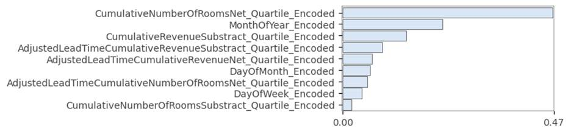
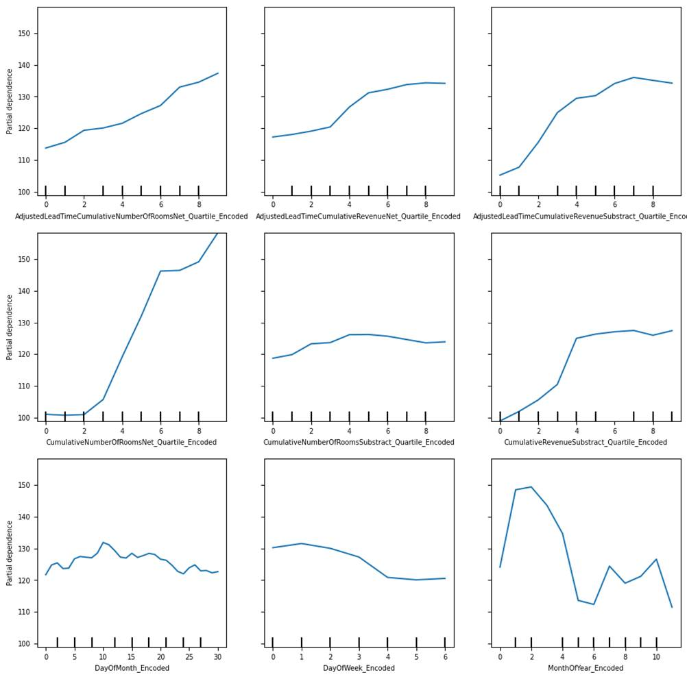
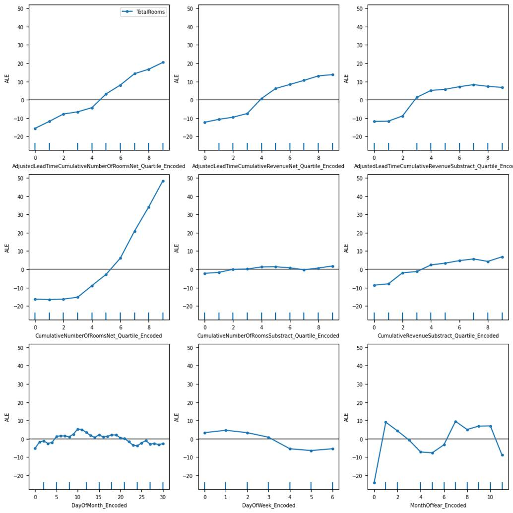
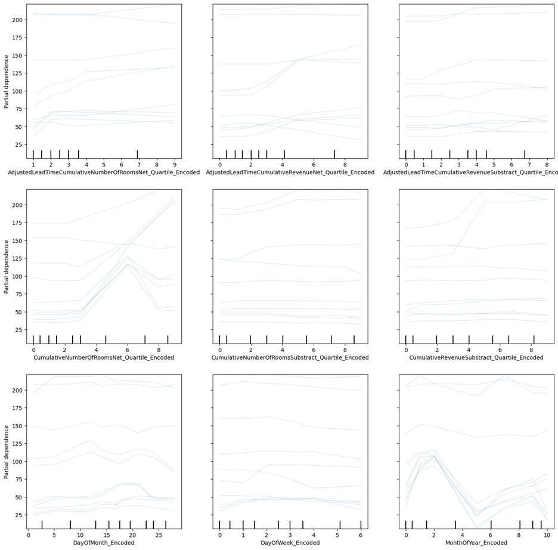
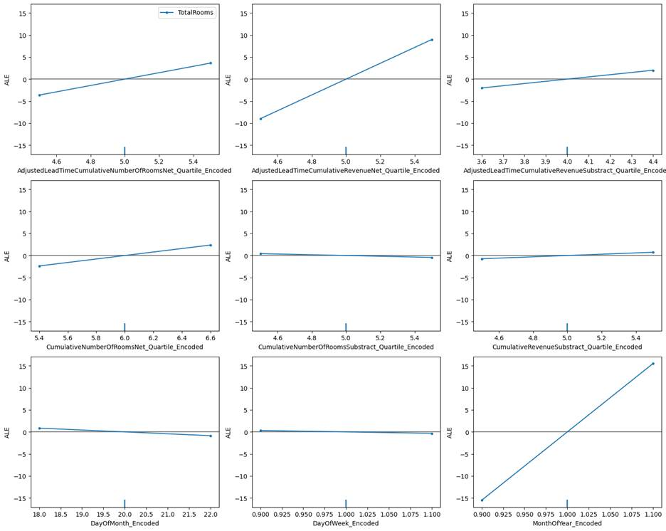
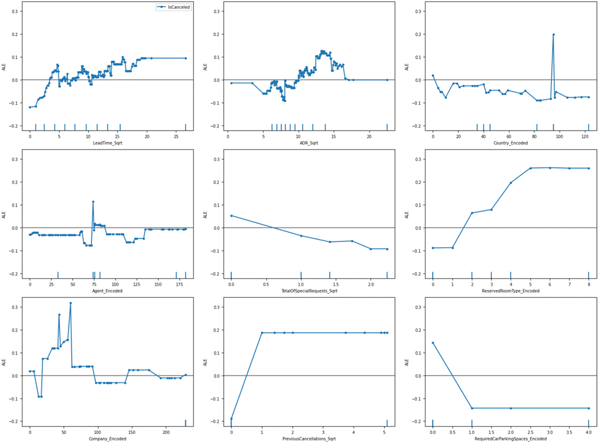
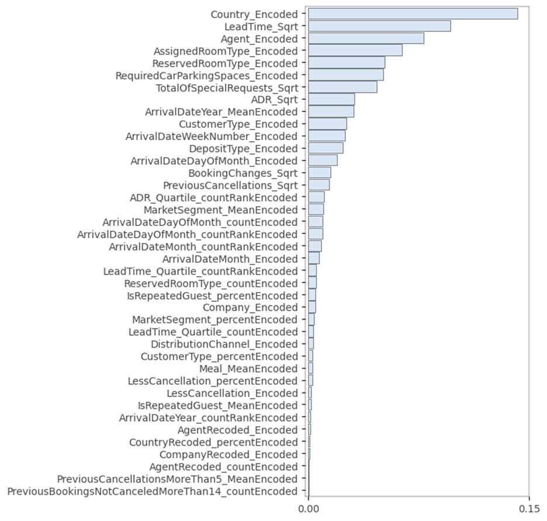
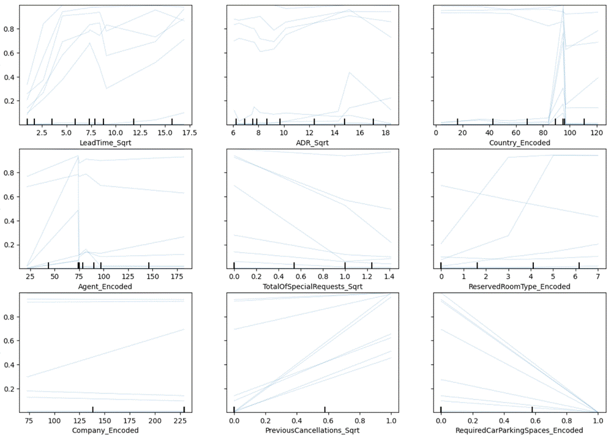
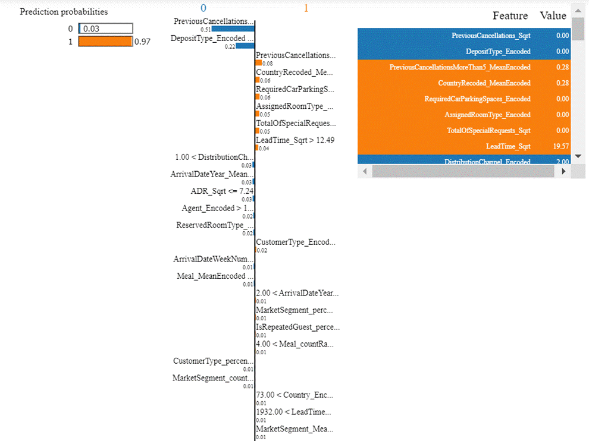
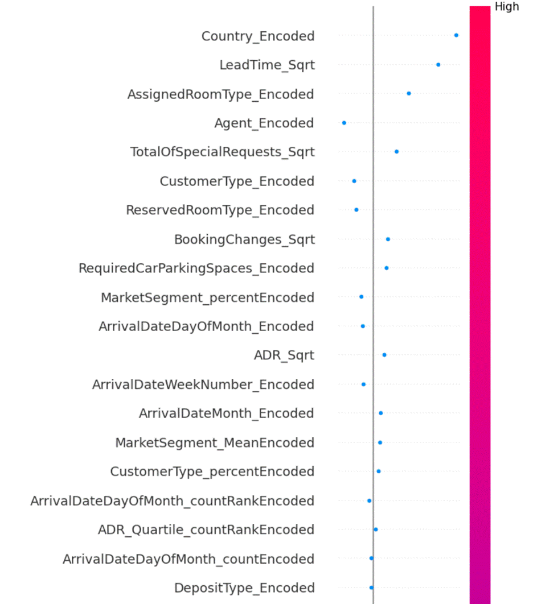

9.4: Putting Everything Together
After understanding different
methods of model explainability, now let us try to apply the methods for the
hotel room booking prediction, and hotel booking cancellation datasets.
9.4.1 Hotel Total
Room Booking
We tried all 4 methods of explaining
the Lightgbm model, partial dependence plot, accumulated local effects plot,
permutation feature importance, and surrogate model. For these two datasets, we
were able to create acceptable level of model performance through
metaheuristics feature selection.
We tried a surrogate linear
regression model. However, the RMSE of the model was more than 30. Hence, we
will not include the surrogate model for understanding the Lightgbm regression
model. Permutation feature importance is the easiest to interpret, as it gives
the features in decreasing order of importance for the model. Let us start with
this method. This can be seen in figure 9.4.1.1.

Figure 9.4.1.1 permutation feature
importance plot for Lightgbm regression model for the hotel total room booking
dataset.
The first feature is a higher order
feature of cumulative rooms sold for the hotel, for a specific check-in date,
at a lead time. Total rooms to be sold does have an impact on seasonality, as
evidenced by the second most important feature, which is the month of the year
encoded feature.
To a layman, we can explain that
sold rooms inventory for a check-in date, and the monthly seasonality of the
booking demand have the biggest impact on total room demand for a check-in
date. This can help the machine learning engineer to speak in layman's terms
and convince the users to adopt the model.
We will now look at the partial
dependence plot for the Lightgbm regression model in figure 9.4.1.2.

Figure 9.4.1.2 partial dependence
plot of Lightgbm regression model for the hotel total room booking dataset.
The most impactful features have the
sharpest curves. The most important is the plot represented in the second row,
first column. This is a higher order feature of the cumulative number of net
rooms sold. This is an almost linear relationship. The second most impactful
feature is the last subplot in the third row and third column. This is an
encoded feature of the month feature. The months are encoded from 0 to 11.
Since this is a categorical feature, it will not be appropriate to deduct a
conclusion based on the shape of the relationship. We can however conclude the
different levels of hotel reservations for different months. Now let us look at
the accumulated local effects plot for the same dataset in figure 9.4.1.3.

Figure 9.4.1.3 accumulated local
effects plot of Lightgbm regression model for the hotel total room booking
dataset.
The accumulated local effects plot
explains the model performance after accommodating the correlation among
features. We can see that the most important feature is the same as it was in
the partial dependence plot. For the second most important feature, the extent
of the impact is less. However, it still has the second-highest sharp changes
for different values of the feature.
In addition to the inferences drawn
from the three plots, we see that there is very little difference between the
partial dependence plot and the accumulated local effects plot. There is one
advantage with the accumulated local effects plot, as it overcomes the
disadvantage of a partial dependence plot, which cannot work with correlated
features. Although the partial dependence plot and accumulated local effects
plots carry more information than the permutation feature importance plot, the
latter is more legible and easier to read if the model has a huge number of
features.
For the hotel bookings cancellations
dataset, we will restrict our investigation for overall model explanation to
accumulated local effects plot, and permutation feature importance. For the
rest of this section, we will discuss explaining individual predictions of
hotel total room booking prediction.

Figure 9.4.1.4 Individual
Conditional Expectation plot of Lightgbm regression model for the hotel total
room booking dataset for the first 10 rows of external test data.
The ICE plot in figure 9.4.1.4
suggests that there is a degree of non-linearity between the feature 'CumulativeNumberOfRoomsNet_Quartile_Encoded'
and the dependent variable. For many cases, the number of total bookings
increases as we move up towards the higher quartile of the number of net
cumulative rooms sold. However, in some cases, it decreases after increasing
for a short while. Hence the relationship could be non-linear.
Let us now look at the LIME
interpretation of a single row of data from the 4th index of external test
data, as displayed in figure 9.4.1.5.

Figure 9.4.1.5 LIME plot of Lightgbm
regression model for the hotel total room booking dataset for the 4th row of
external test data.
The above plot has 3 parts. Let us
understand the first part. The predicted value displays higher values in orange
color and smaller values in blue color. The prediction from model 189.01 is a
high value. The second subplot has a negative and positive relationship
indicator against the feature. For example, for the DayOfWeek_Encoded feature, total
rooms increase in demand for days that are farther from Monday. Similarly, for
the AdjustedLeadTimeCumulativeNumberOfRoomsNet_Quartile_Encoded
feature, it has a negative relationship with total room demand. This is the
interaction between lead time and the net number of rooms quartile feature. The
second part of the plot also suggests the current value for the feature,
against a threshold set by the model. For example, the DayOfMonth_Encoded feature, has
a negative relationship with the total rooms sold for a check-in date. I.e.
Total number of rooms is sold more towards the beginning of the month, and then
gradually decreases as the month passes. Here the value is 20, which is higher
than the set threshold of 15, and the check-in date for which the model has
predicted is farther in the month.
The third part of the plot is a
table and simply denotes each feature in orange and blue color, depending on
whether the feature has a positive or negative relationship with the dependent
variable. The second column of the table shows the actual values of the feature
for the specific row.
Now let us look at the
counterfactual model explanation for the same observation in 4th
row, in figure 9.4.1.6.

Figure 9.4.1.6 Counterfactual plot
of Lightgbm regression model for the hotel total room booking dataset for the
4th row of external test data.
We can clearly see that month of the
year encoded feature has highest impact, as identified by the counterfactual
plot. A small change the value of month can bring a drastic change in the model
prediction. This was followed by the AdjustedLeadTimeCumulativeRevenueNet_Quartile_Encoded
feature.
Now let us look at the SHAP model
explanation for the same observation in 4th row, in figure 9.4.1.7.

Figure 9.4.1.7 SHAP plot of Lightgbm
regression model for the hotel total room booking dataset for the 4th row of
external test data.
This plot is a simple and
easy-to-understand explanation of the prediction for 4th row of
data. The plot ranks the extent of impact each feature had on the specific
prediction. The month of the year and day of the week has the most impact on
predicting the 4th row of data. This indicates a strong trend and
seasonality impact for this check-in date.
9.4.2 Hotel Booking
Cancellation
We will look at permutation feature
importance, and the accumulated local effects plot for the overall model
explanation in this section. We tried creating a logistic regression surrogate
model. However, its precision was found to be very low at 0.19 for the external
test data. Hence, we will not try the surrogate model explanation for the hotel
booking cancellation dataset.
Amongst the partial dependence plots
and accumulated local effects plots, the latter is more robust as it considers
the correlation among features. Hence, we will discuss the latter. As the
number of features in the model is quite high, we will restrict our model
explanation to the topmost features. Let us now look at figure 9.4.2.1 for the
top 7 features based on the variation each feature has concerning the dependent
variable.

Figure 9.4.2.1 Accumulated local
effects plot of Xgboost classification model for the hotel booking cancellation
dataset
We can see from the plot that the
lead time, followed by annual daily revenue (ADR) makes a huge impact on the
dependent variable. This is confirmed by the huge variation in the plot, as
well as distinctly visible scatter data points.
Let us now perform permutation
feature importance for the top 40 features in figure 9.4.2.2.

Figure 9.4.2.2 Permutation feature
importance plot of Xgboost classification model for the hotel booking
cancellation dataset
Permutation feature importance
suggests that country is the biggest contributor to booking cancellation in the
model. This is followed by lead time and agent. Guests from certain countries,
as well as reservations from certain agents, are more likely to lead to
cancelation in comparison to others. While reporting this, we also need to
consider the ethical aspects of the model, so that it is not inherently biased
and discriminatory towards different nationalities.
After understanding the model as a
whole, now let us try to explore individual predictions made by the model. Let
us start with ICE plots in figure 9.4.2.3 with 10 example observations from
external test data.

Figure 9.4.2.3 Individual
Conditional Expectation plot of Xgboost classification model for the hotel
booking cancellation dataset for the first 10 rows of external test data.
The ICE plot in figure 9.4.2.3
suggests that lead time and previous cancellations are clear indicators of the
likelihood of cancellation for the hotel reservation. Although in some cases,
it is difficult to differentiate, as seen for the lead time square root value
between 7.5 and 10. However, in comparison to other features, these features
give a clear indication of cancellation behavior.
Now let us look at the LIME plot for
the Xgboost model in figure 9.4.2.3. As the number of features is numerous, we
will be focusing on top features only.

Figure 9.4.2.3 LIME plot of Xgboost
classification model for the hotel booking cancellation dataset for the 4th
row of external test data.
The prediction value is 0.97 as the
probability of the reservation being canceled. The table on the right-hand side
in figure 9.4.2.3 has the actual value of different features, based on which
the Xgboost model predicted 0.97. The current value for the feature LeadTime_Sqrt is
19.57, which is higher than the threshold identified by LIME as 12.49 for the
feature, beyond which the likelihood of cancellation increases.
We tried counterfactual
explanations. However, it was not conclusive for the 4th observation in
external test data. Hence, we will look at SHAP explanations for the 4th
observation in the external test data for the top 20 features, as identified by
the SHAP explanation.

Figure 9.4.2.4 SHAP plot of Xgboost
classification model for the hotel booking cancellation dataset for the 4th row
of external test data.
The highest impact for the model
prediction is made by encoded features of the country and the square root of
lead time respectively. This matches with permutation feature importance in
figure 9.4.2.2.